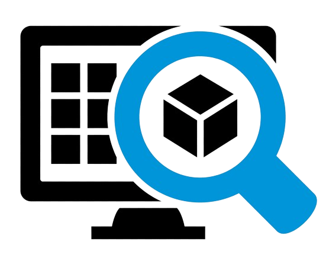

Odoo Inventary
 What is Odoo Inventory?
This popular Odoo application can perform important tasks for different types of businesses; therefore, its importance may vary. But what does this mean for your business? Businesses such as retailers and manufacturers benefit from smart inventory features, efficient work facilitation, multiple warehouse management, forecasting capabilities, etc. Others, such as distribution and wholesale companies, use it due to its simple but optimal features, with personalized reports and analysis. By the time you use Odoo Inventory fluently, you'll start using phrases like "effective storage method", "reliable", "intelligent double-entry inventory system", "fully automated replenishment", because those are the qualities that helped make it Odoo Inventory stands out as one of the best inventory management systems today. And if you can use all the features that the app has in store for your business, then you will regret not using Odoo Inventory sooner. Now, let's get to work: what is Odoo Inventory and what features does it offer to help you master inventory management?

What is Odoo's inventory management system and how is it utilized in business management?¶
Odoo Inventory is Odoo ERP's exclusive double-entry inventory management system that enables complete traceability, from supplier to customer. It is a double-entry inventory management system because each stock movement is automatically taken care of when it is created. The stock in will be automatically subtracted from your supplier location (which has been configured in Odoo) and the stock out will be automatically added in your warehouse, or vice versa, so that users do not have to adjust the stock change manually. These automatic transfers in Odoo Inventory allow users to schedule transactions and help automate accounting processes. Its seamless integration with other Odoo applications also ensures that the inventory management cycle across all departments is completed smoothly.
Features of Odoo Inventory¶
- Shipping:
Odoo Inventory is robust as it allows organizations to take a reasonable number of shipments and purchase from suppliers on a daily basis. This is possible because Odoo Inventory is a special module in the list of Odoo applications whose main responsibility is to ensure that purchases and shipments are carried out effectively and efficiently. For example, when a retailer receives a sales order, an initial check of inventory availability is automatically performed before accepting sales orders. Whether the products are available or not, the customers are informed and the same is communicated at the Point of Sale (POS) of the store.
- Reorder Rules:
Odoo Inventory's reordering rules ensure that you never run out of products. It allows businesses to automatically stock products while effectively dealing with overstock. Alerts can be configured so that when a product reaches a certain number in the warehouse or store, the corresponding personnel is informed. Once a minimum stock count is reached, you can take three actions. Configure the platform to make automatic purchases, make direct shipments from another warehouse if you have multiple warehouses, or order the manufacturing of the product.
-
Reports:
What is an inventory system without an advanced reporting feature? Odoo Inventory also has a reporting feature that allows you to generate and customize reports based on various needs and parameters. The reporting feature also has filtering parameters that can be changed based on product variant, dates, product types, etc. You can also modify inventory data and generate bar charts, line charts, or pie charts.
-
Barcode Integration:
Once the barcode integration option is enabled in the settings menu, users can scan products through a connected barcode scanner. The flexibility of Odoo Inventory barcode integration comes in two forms; First, users can generate different barcodes for different products based on the nomenclature available on the platform. Secondly, Odoo allows printing simple images of generated barcodes on the product packaging.
-
Traceability:
What mess will you create if you can't track the movements of each product within the organization and in shipping? Odoo Inventory also ensures that you don't have to worry about tracking products. From the suppliers delivery order, you can assign each product a unique serial and lot number.
- Operation Routes:
Odoo Inventory allows users to create product movement routes within the organization. This movement can be related to purchasing, sales and manufacturing, and can be configured based on the processes or mode of operation of the business.
- Multiple Warehouses:
Multiple warehouses from the same company in different locations around the world? There is no cause for alarm as Odoo Inventory allows you to manage these warehouses from a single platform without problems. The movements and transformation of each product are monitored from start to finish, from supplier delivery to the customer's doorstep.
Getting started with Odoo Inventory¶
- Product Creation:
Once you have installed your Odoo Inventory, either yourself or with the help of a partner like Wait More, the first task is to create a product. To do that, go to Products → Products → Create
Item Storage¶
An actual place where items are stored in Odoo Inventory is the Warehouse. Needless to say, you can easily set up a warehouse in Odoo Inventory. But there is more! If you have multiple warehouses or different locations of the same warehouse, you can also configure this.
Now, let's create warehouses.¶
To do this, go to Settings → Warehouses → Create¶
Creating a new warehouse in Odoo Inventory¶
So, put the warehouse name, short name and address. You can also go ahead to create multiple warehouses from that dashboard (using the same process). Please note that in the latest versions of Odoo, you do not have to activate the Storage Locations setting manually. They activate automatically.
- Location Creation:
Locations in Odoo Inventory are specific locations within a warehouse, such as a floor or a shelf. Locations cannot be linked to multiple warehouses, but we can create multiple locations attached to each warehouse. To do that, go to Settings → Locations List of warehouse locations You'll see a list of locations and their types on the dashboard. You can then go ahead to create a new location.
Creating a new location in the Inventory¶
- Storage Rules:
Use Odoo Inventory Storage Rules to avoid storing products incorrectly. This process helps place products in the most appropriate location once they are received from shipments. For example, if you have a retail store that stocks pens for whiteboards and customizable desks. While they are in the same warehouse, you will want to make sure that the pens are stored in the pens location and the desks are stored in the desk location. Storage rules are what are used to organize products before they even reach the warehouse. To do that, go to Settings → Storage Rules → Create
- Creation of Storage Rules:
While in the interface shown in the screenshot above, you can decide where to place each product when it arrives at each of your warehouses. In the example shown in the screenshot below, we have assigned the whiteboard pen to be stored in:
WH/Stock/Shelf1 when they arrive.